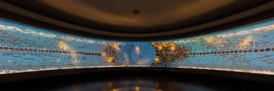
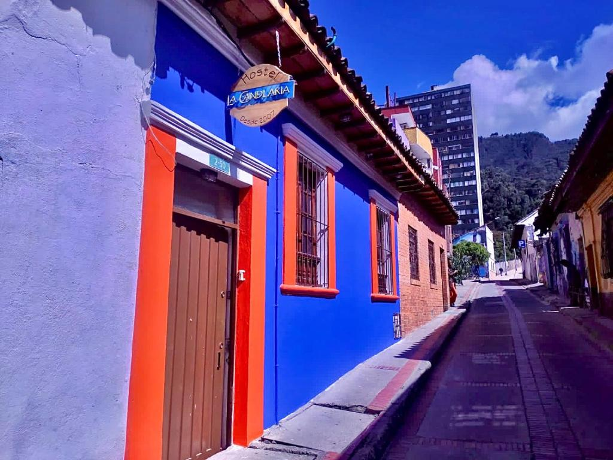

Bogotá is Colombia's capital and a city of contrasts. Nestled high in the Andes, it combines rich history, vibrant culture, and modern innovation. Known for its museums, architecture, and diverse neighborhoods, Bogotá offers an urban adventure like no other.
From exploring the historic La Candelaria district to climbing Monserrate for breathtaking views, Bogotá is a city that captures the heart of every traveler. Discover world-class museums like the Gold Museum, indulge in local delicacies, or take a bike ride through its extensive cycle paths.
This city has many amazing spots such as:
Monserrate
Perched high above the city, Monserrate offers panoramic views and a sense of peace. Whether you hike, take the cable car, or the funicular, it’s a must-visit destination.
Gold Museum
Home to one of the largest collections of pre-Hispanic gold artifacts in the world, this museum is a treasure trove of history and culture.

La Candelaria
Bogotá's historic center is full of colorful streets, colonial architecture, and cultural landmarks. Perfect for a walking tour or enjoying street art.
